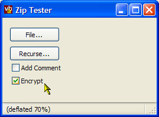

Info-ZIP Zip DLL (Renmaed vbzip11.dll) (72K)
Info-ZIP Zip DLL (Renmaed vbzip11.dll) (72K)
 VB5 Zip Sample Project (39K)
VB5 Zip Sample Project (39K)
 VB6 Zip Sample Project (37K)
VB6 Zip Sample Project (37K)
 Bugs: 5 / 5
Bugs: 5 / 5
 Issues: 1 / 1
Issues: 1 / 1
 Questions: 0 / 0
Questions: 0 / 0
 26 Jan 2003
26 Jan 2003
Added support for Encrypting zip files, and adding zip file comments.
Added VB6 project
 Unzipping files using the free Info-Zip Unzip DLL with VB
Unzipping files using the free Info-Zip Unzip DLL with VB
 Introduction to the freeware Info-ZIP libraries
Introduction to the freeware Info-ZIP libraries
 Visual Basic Project Zip Utility
Visual Basic Project Zip Utility

Zipping files using the free Info-Zip Zip DLL (now with encryption support)
Add the ability to ZIP up data to your application without needing third-party controls
This article provides a class to enable you to simply add the ability to zip files to a VB application. With this class you can create zips which recurse subdirectories, store full or relative path names, add and delete files from zips, freshen zips - basically everything you would expect to be able to do from a fully featured zipping application, and all under your programmatic control.
Reusing the VB code - Quick Start
To get the simplest overview of the code, extract these two files from the Zip Sample project:
- cZip.cls
- mZip.bas
Add these two files to a new project in VB, and then declare a WithEvents instance of the cZip class:
Private WithEvents m_cZip As cZip
The simplest operation is to add a single file to a new zip file. This is all you need to do:
' Set the zip file:
m_cZip.ZipFile = sFile
' Make sure any previously zipped files are cleared:
m_cZip.ClearFileSpecs
' Add the name of the file you want to zip:
m_cZip.AddFileSpec "C:\Stevemac\HTML\ssite\index.html"
' Create the zip!
m_cZip.Zip
' Check for success failure:
If Not(m_cZip.Success) Then
' Zip failed. One of the notifications will have
' provided the reason.
' e.g. can't write output file, can't find any
' matching files
End If
In More Detail
Adding Files to a Zip
Adding files to the zip is accomplished using the AddFileSpec method. A file specification can either be a fully specified path name (e.g. C:\Stevemac\HTML\ssite\index.html), a wildcard specification (e.g. C:\Stevemac\HTML\ssite\*.htm? ) or a relative path (e.g. index.html). Relative paths are taken relative to the BasePath property of the zip. If you wish to store relative directory names in your zip, then you must specify relative paths as the file spec.
AddFileSpec adds additional file specifications to be used during operations. To clear the buffer, use ClearFileSpecs. To modify existing file specifications, you can use FileSpecCount to return how many specifications have been set up and the property FileSpec to read or write the property.
Progress and Cancel
As Zipping operations are performed, the class will raise the Progress event, which you can use to display status messages about the directory operation, and Cancel events, which allows you to stop the directory or unzip operation.
Options
The most important zip options are RecurseSubDirs and StoreFolderNames. When you set RecurseSubDirs, the zip DLL will check for all files starting at the BasePath property and below for matches against each of the FileSpecs. So, for example, if you add "*.*" as a specification, all files in the BasePath folder and below will be added to the zip. The StoreFolderNames option determines whether the zip will include the folder names as well as the file names. The default operation of this option is to store the full folder name, however, if your FileSpec items are relative paths at or below the BasePath then the zip will include the relative path name instead. Note that relative folder names can only be stored for deeper folders, so ..\MyFolder will not be represented.
Deleting Files
Deleting files from a Zip is accomplished in exactly the same way as zipping, except you use the Delete method instead of the Zip method.
Password Protecting Zip File Contents
Password protection is enabled by setting the Encrypt flag in the class. If set, once the Zip method has been called the PasswordRequest event will be fired. This is fired twice: first to get the password and second to confirm the password originally typed. The bConfirm flag is set true for password confirmations. Otherwise, check the maximum allowed password length from the lMaxPasswordLength parameter, and then request the password from the user and put it into the sPassword parameter. A sample of using this event is as follows:
Private WithEvents m_cZ As cZip
...
Private Sub ZipLog()
With m_cZ
.ZipFile = App.Path & "\backup.zip"
.Encrypt = True
.BasePath = App.Path
.ClearFileSpecs
.AddFileSpec App.Path & "\appdata.log"
.Zip
End With
End Sub
...
Private Sub m_cZ_PasswordRequest( _
sPassword As String, _
ByVal lMaxPasswordLength As Long, _
ByVal bConfirm As Boolean, _
bCancel As Boolean _
)
'
Dim sPass As String
Dim sMsg As String
If (bConfirm) Then
sMsg = "Confirm password:"
Else
sMsg = "Enter password (maximum length = " & _
lMaxPasswordLength & ") characters"
End If
sPass = InputBox(sMsg, App.EXEName)
sPass = Trim(sPass)
If (Len(sPass) = 0) Then
bCancel = True
ElseIf (Len(sPass) > lMaxPasswordLength) Then
' here we ignore it; the DLL will truncate it
' but you could re-prompt the user
sPassword = sPass
Else
sPassword = sPass
End If
'
End Sub
Adding Comments to Zip Files
Adding comments works in a similar way to password protecting zip contents. If you set the AddComment flag to true, then the RequestComment event will be raised during zipping. Note that the maximum length of a comment using Info-ZIP's libraries is 255 characters.
More
For a more sophisticated zipping sample, check out the VBP Zip utility in the Utilities section of the site.